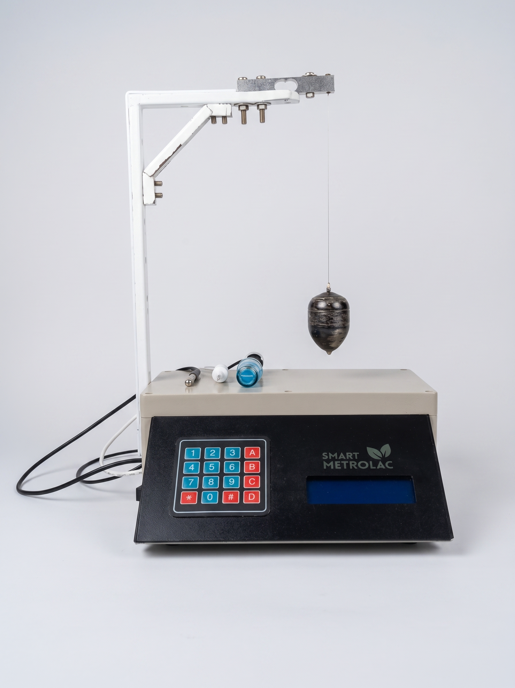
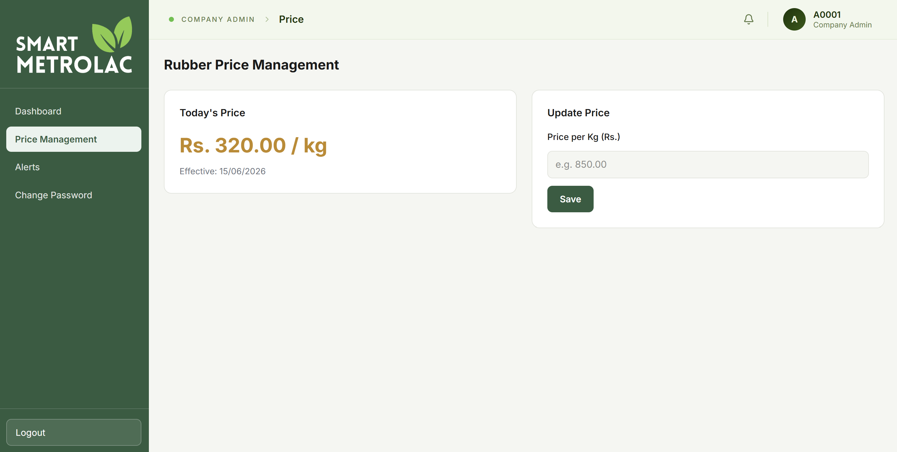
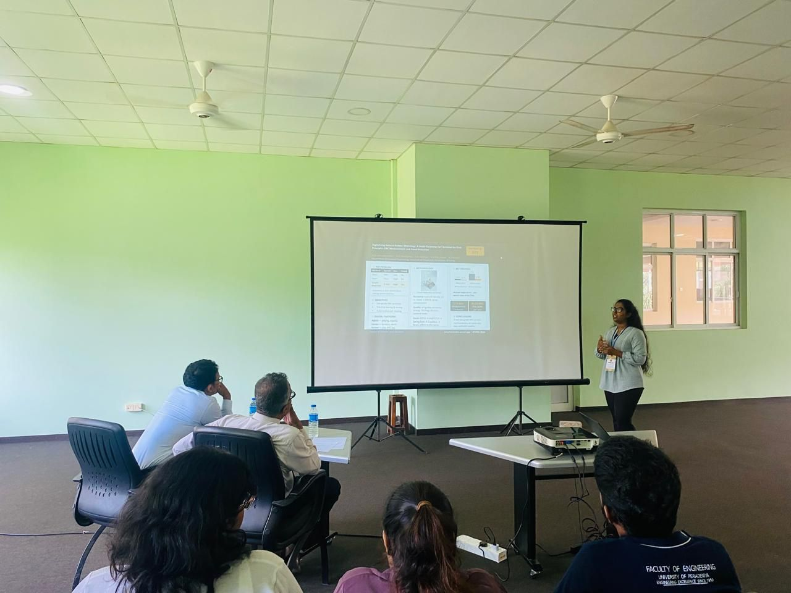
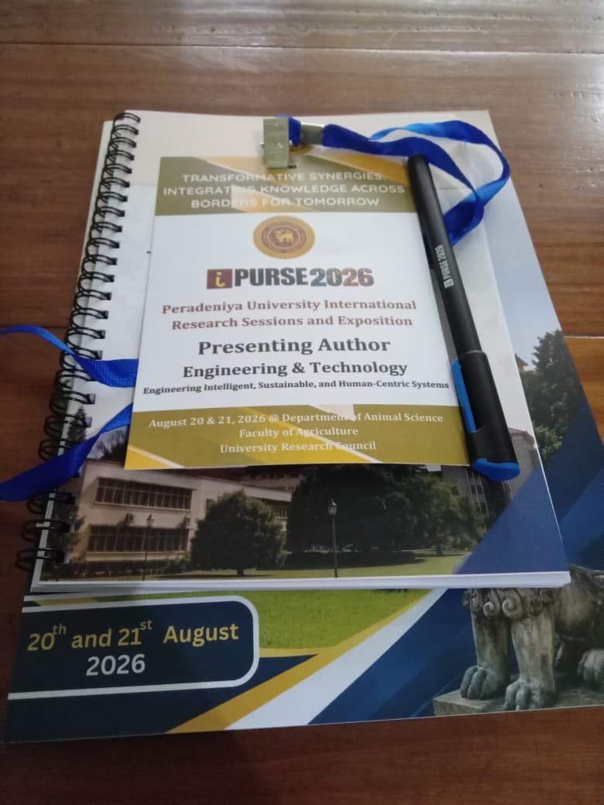

Smart-Metrolac
IoT-Powered Dry Rubber Content Testing
Replacing manual field testing with real-time, high-precision measurement using Archimedes' buoyancy principle. Field-validated against the ISO 126 oven-drying standard at Lalan Rubber.
MAE vs ISO 126
Lalan Rubber Field Samples
Role-Based Dashboards
Why Smart-Metrolac Exists
Dry Rubber Content (DRC) determines what a farmer gets paid for their latex. Today, that reading is taken with a traditional Metrolac hydrometer — a manual process that depends on the operator's eye, is slow at the collection point, and frequently produces figures farmers and factories dispute. There is no real-time record, no traceability, and no way to catch errors before payment is settled.
Smart-Metrolac replaces this with a floating IoT sensor that applies Archimedes' buoyancy principle and a custom two-component mixture model to compute DRC automatically, transmit it live, and make every reading auditable — validated in the field against the ISO 126 oven-drying standard.
- closeManual, operator-dependent reading
- closeNo digital record or traceability
- closeFrequent farmer–factory disputes
- checkAutomated buoyancy-based reading
- checkLive cloud record, fully auditable
- check±0.74% MAE vs ISO 126 lab standard
Three-Tier Architecture
Device, cloud, and interface layers work together to turn a physical buoyancy reading into a live, role-based dashboard update.
Hardware
ESP32 device reads sensors (HX711, DS18B20, pH, TDS), applies the buoyancy + mixture-model calculation, and syncs over WiFi.
Backend
Spring Boot (Java 21) exposes JWT-secured REST APIs and an MQTT subscriber, backed by a PostgreSQL database.
Frontend
A React.js dashboard serving three role-based views: Company Admin, Collection Center Admin, and Farmer.
Measurement Data Flow
Hardware Design

The device floats directly in the latex collection tank. Its buoyancy sensor measures displacement, and onboard firmware applies Archimedes' buoyancy principle combined with a custom two-component mixture model to convert that displacement into a DRC percentage — the same underlying physics as a Metrolac hydrometer, fully automated and continuously logged.
Three Role-Based Dashboards
The same live data feeds three purpose-built views — one per role in the supply chain.

See It In Action
A full walkthrough of taking a live DRC reading with the Smart-Metrolac device, from placement in the tank to the dashboard update.
▸ Swap the embed src above with your demonstration video link
Field Validation — Lalan Rubber Estate
Eight real-world latex samples, each measured by Smart-Metrolac and by the traditional Glass Metrolac hydrometer, independently verified against the ISO 126 lab oven-drying reference method.
| Sample | Lab Oven (%) | Smart-Metrolac (%) | Dev. | Glass Metrolac (%) | Dev. |
|---|
Estimated Budget
Achievements

